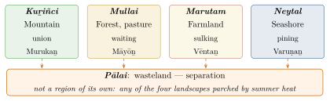

Chapter 7: Classical Tamil Literature: The Caṅkam Poems and After¶
yātum ūrē yāvarum kēḷir
tītum naṉṟum piṟartara vārā
Every town is our town, everyone our kin. Evil and good do not come from others.
— Kaṇiyaṉ Pūṅkuṉṟaṉār, Puṟanāṉūṟu 192
7.1 Introduction¶
Tamil is the only modern Indian language with a substantial literature that is as old as the classical literatures of Sanskrit and Prakrit and independent of them. Its earliest layer is a body of some 2,400 poems, by some 470 named poets, collected in eight anthologies and ten long poems. These are commonly called “Caṅkam” (Sangam) poems, after a tradition, first recorded in a commentary of about the eighth century on the Iṟaiyaṉār Akapporuḷ, that three successive “academies” (caṅkam) of poets met under the patronage of the Pāṇṭiya kings over many thousands of years, the first two in cities later swallowed by the sea. The legend is not history, but the name has stuck.
Most scholars date the bulk of the anthology poems to roughly the first three centuries CE, with some poems perhaps earlier, and place the later layers — the Kalittokai, the Paripāṭal and the Tirumurukāṟṟuppaṭai — in the fifth to seventh centuries. The poems were collected and arranged, with colophons naming poets and situations, several centuries after their composition (Zvelebil 1973, 1974).
This dating has been seriously challenged. In Kāvya in South India (2001) Herman Tieken argued that the poems are not the remains of an ancient bardic culture at all, but a learned literature composed at the Pāṇḍya court around the ninth century, close in time to the commentary that first tells the story of the academies (Tieken 2001). He pointed out that no external evidence for the poems is earlier than that period; that their conventions closely resemble those of Sanskrit and Prakrit court poetry, above all Hāla’s anthology of village love (Section 5.4); and that the world of poor bards and generous chiefs they describe may be a literary fiction of the kind kāvya delighted in, rather than a record of a real society. Most Tamil specialists, George Hart among them, have rejected the redating. They point to the language of the poems, which is older than that of the devotional hymns of the sixth to ninth centuries; to the internal differences between the earlier anthologies and the later layers; and to the agreement between the poems and the evidence of Tamil-Brāhmī inscriptions, hero-stones and the archaeology of Indo-Roman trade (Section 7.8). The debate has nonetheless sharpened a point that both sides accept: the anthologies as we have them, with their arrangement, colophons and commentaries, are the product of a later scholarly act of compilation, and the poems reach us only through it. This book follows the majority dating, with this caution. They were almost forgotten in the medieval period and were recovered in the late nineteenth century from palm-leaf manuscripts by C. W. Tāmōtaram Piḷḷai and U. Vē. Cāminātaiyar, whose editions transformed the understanding of Tamil literary history.
The poems are mainly secular: they speak of love and war, of kings and bards, of the landscapes and seasons of the Tamil country. Their idiom owes little to Sanskrit, though Sanskrit words and North Indian deities and ideas appear, increasingly in the later layers. David Shulman’s Tamil: A Biography is an engaging introduction to the whole tradition (Shulman 2016).
7.2 The Tolkāppiyam¶
The Tolkāppiyam, ascribed to Tolkāppiyar, is the oldest surviving Tamil grammar. It has three books: Eḻuttatikāram on sounds and letters, Collatikāram on words and syntax, and Poruḷatikāram on “subject matter”, that is, poetics. Its date is disputed. Some Tamil scholars, such as S. Ilakkuvanar, have argued for a date several centuries before the Common Era (Ilakkuvanar 1963). Most historians see the work as layered: the first two books may belong to the last centuries BCE or the early centuries CE, while the Poruḷatikāram, which systematises the conventions of the anthology poems, is generally considered later, perhaps as late as the fifth century (Zvelebil 1974). Its grammar is discussed further in Volume 10, Śabda Vidyā.
The Poruḷatikāram divides poetry into akam, the “interior” world of love between man and woman, and puṟam, the “exterior” world of war, kingship, generosity, death and fame. Each is subdivided into situations (tiṇai). It also describes the conventions governing who may speak in a poem, the elements that make up a poem’s setting, and the eight emotions (meyppāṭu) discussed in Chapter 6.
7.3 The Tiṇai: Landscape and Love¶
The most distinctive feature of classical Tamil poetics is the association of each phase of love with a landscape. Each landscape has its “first elements” (mutal: place and time), its “native elements” (karu: gods, people, animals, plants, occupations, music) and its human situation (uri). A poem need only mention a flower, a bird or a kind of terrain for an informed listener to recognise the emotional situation. A. K. Ramanujan’s translations and essays introduced this system to a wide readership (Ramanujan 1967, 1985). Table 7.1 summarises the five landscapes.
| Tiṇai (flower) | Landscape | Situation (uri) | Season and time | Deity |
|---|---|---|---|---|
| Kuṟiñci | Mountains | Lovers’ union, secret meetings | Cool season; midnight | Murukaṉ |
| Mullai (jasmine) | Forest and pasture | Patient waiting of the wife | Rainy season; evening | Māyōṉ (Viṣṇu) |
| Marutam | Cultivated riverine land | The wife’s sulking at the husband’s infidelity | All seasons; dawn | Vēntaṉ (Indra) |
| Neytal (water-lily) | Seashore | Anxious pining | All seasons; sunset | Varuṇaṉ |
| Pālai | Parched wasteland | Separation; the lover’s journey; elopement | Summer; midday | (later Koṟṟavai) |
Pālai is not a separate region but any land parched by heat, and the Tolkāppiyam adds two further “situations” outside the five: one-sided love (kaikkiḷai) and mismatched love (peruntiṇai). Figure 7.1 shows the five landscapes schematically.

7.4 Akam: The Poetry of Love¶
Akam poems are dramatic monologues. They are spoken by the heroine, the hero, the heroine’s friend (tōḻi), her foster-mother, the hero’s companion, or occasionally passers-by; the commentarial tradition supplies for each poem a “situation” (tuṟai) that explains who speaks to whom and when. By convention the lovers are never named: they are types, not individuals, and the poem’s meaning depends on the reader’s recognition of the conventions. Love is divided into premarital “secret” love (kaḷavu) and married love (kaṟpu).
The most famous akam poem, from the Kuṟuntokai, is known by the name of its poet only through its central image: Cempulappeyanīrār, “the poet of the rain on red earth”.
Kuṟuntokai 40
yāyum ñāyum yārā kiyarō
entaiyum nuntaiyum emmuṟaik kēḷir
yāṉum nīyum evvaḻi yaṟitum
cempulap peyanīr pōla
aṉpuṭai neñcam tāṅkalan taṉavē
What was my mother to yours? How was my father kin to yours? How did you and I ever meet? Like rain falling on red earth, our loving hearts have mingled.
The poem is spoken by the hero, according to the commentary, to reassure the heroine after their first union. Its effect depends on the closing simile: as rain and red soil mix and cannot be separated, so their hearts, unrelated by kinship, have become one.
7.5 Puṟam: The Poetry of the Public World¶
Puṟam poetry celebrates and laments the public world: the valour and generosity of kings, the hunger of bards seeking patrons, battles, cattle raids, hero-stones raised for fallen warriors, and the transience of fortune. The Puṟanāṉūṟu (“Four Hundred Poems of the Exterior”), translated by George Hart and Hank Heifetz, is the great collection (Hart and Heifetz 1999). Its poems range from praise of patrons to meditations on death. In poem 278 an old mother, told that her son fled from battle, swears to cut off the breasts that fed him if it is true; she searches the battlefield, sword in hand, turning over the bodies, and when she finds him lying cut to pieces her joy is greater than on the day she bore him. The poem embodies the harsh martial ethic of the society. Others, like poem 192 quoted at the head of this chapter, express a broad and humane wisdom.
7.5.1 The Situations of Puṟam¶
Just as akam poetry has its landscapes, the Tolkāppiyam divides puṟam poetry into situations (tiṇai), each named after a flower worn by warriors and each paired with one of the akam landscapes. The principal ones are listed in Table 7.2.
| Tiṇai | Situation |
|---|---|
| Veṭci | Cattle raid, the opening act of hostilities |
| Vañci | Invasion of enemy territory |
| Uḻiñai | Siege of a fort |
| Tumpai | Pitched battle |
| Vākai | Victory, and excellence in one’s calling |
| Kāñci | The transience of life and fortune |
| Pāṭāṇ | Praise of a king or patron, and the bard’s request for gifts |
The kāñci theme, meditation on impermanence, gives some of the most memorable puṟam poems, and the Maturaikkāñci takes its name from it: its long description of the splendour of Madurai is framed as a warning to the king that all this will pass.
7.5.2 Hero-Stones¶
Several puṟam poems refer to the custom of erecting a memorial stone (naṭukal) for a warrior who fell in battle, especially in defending cattle against raiders. The stone was inscribed with his name and deeds, decorated with peacock feathers and worshipped with offerings. The Tolkāppiyam lists the stages of the rite, from finding a suitable stone to its consecration. Hundreds of hero-stones, some inscribed in Tamil-Brāhmī and early Vaṭṭeḻuttu script, have been found in Tamil Nadu and neighbouring regions, confirming the poems’ picture of a society in which cattle raids and the cult of the heroic dead were important, and showing how closely the poetic conventions were tied to actual practice.
7.5.3 Suggestion in Akam Poetry¶
The commentators describe two techniques by which akam poems convey meaning indirectly. In uḷḷuṟai uvamam, “implicit comparison”, a description of nature parallels the human situation without any word of comparison: a poem spoken by a wife whose husband is unfaithful may describe a buffalo trampling a pond full of lilies, leaving the listener to see the husband in the careless animal. In iṟaicci, “suggestion”, a detail of the landscape implies something about the speaker’s feelings that she cannot say directly. Such techniques make the Tamil poems remarkably dense, and they invite comparison with the Sanskrit theory of dhvani (Chapter 6), although the two developed independently (Ramanujan 1985). Modern readers have also compared the juxtaposition of scene and feeling with Imagism or with the “objective correlative”; such comparisons can help a newcomer, but the poems belong to their own system of landscapes and situations, as Ramanujan and Hart have shown.
7.5.4 Bards and Patrons: Kapilar and Pāri¶
The Puṟanāṉūṟu preserves something like the story of a friendship. Pāri, chief of the hill country of Paṟampu, was celebrated as one of the most generous patrons of the age; legend says he once gave his chariot to a jasmine creeper that had no support to climb on. The three crowned kings besieged his hill and, unable to take it, killed him by treachery. The poet Kapilar, his friend, wrote poems on the siege, mocking the kings with the boast that they could never take Paṟampu by force, though they could have it for the asking if they came as bards; and after Pāri’s death he mourned his friend. A short poem ascribed to Pāri’s daughters themselves (Puṟanāṉūṟu 112) recalls the moonlit night of a month ago, when they had their father and their hill, and contrasts it with the present, when enemies hold both. Kapilar then took the orphaned daughters in search of husbands among the chiefs. Whatever the historical basis of the story, these poems give the bardic relationship between poet and patron a moving human face.
7.6 The Corpus: Eight Anthologies and Ten Long Poems¶
7.6.1 The Eight Anthologies (Eṭṭuttokai)¶
The eight anthologies, their size and their character are summarised in Table 7.3.
| Anthology | Poems | Type | Remarks |
|---|---|---|---|
| Naṟṟiṇai | 400 | akam | Poems of 9–12 lines |
| Kuṟuntokai | 401 | akam | Short poems of 4–8 lines |
| Aiṅkuṟunūṟu | 500 | akam | 100 very short poems for each landscape, each set by a different poet |
| Akanāṉūṟu | 400 | akam | Longer poems of 13–31 lines, ordered by landscape |
| Kalittokai | 150 | akam | Later; dramatic poems in kali metre, including unconventional loves |
| Puṟanāṉūṟu | 400 | puṟam | War, kingship, patronage, death (a few poems lost) |
| Patiṟṟuppattu | 100 | puṟam | Ten decads on Cēra kings; the first and last decads are lost |
| Paripāṭal | 70 | mixed | Later; hymns to Murukaṉ and Tirumāl, and poems on the river Vaiyai; about 24 survive |
7.6.2 The Ten Long Poems (Pattuppāṭṭu)¶
The ten long poems, with the poets named in the colophons, are listed in Table 7.4.
| Poem | Poet | Subject |
|---|---|---|
| Tirumurukāṟṟuppaṭai | Nakkīrar | A later devotional “guide” poem to the shrines of Murukaṉ |
| Porunarāṟṟuppaṭai | Muṭattāmakkaṇṇiyār | A war-bard guides another to the Cōḻa Karikāl |
| Ciṟupāṇāṟṟuppaṭai | Nattattaṉār | A bard guides another to a generous chief |
| Perumpāṇāṟṟuppaṭai | Kaṭiyalūr Uruttiraṅkaṇṇaṉār | Guide to the chief Toṇṭaimāṉ Iḷantiraiyaṉ of Kāñci |
| Mullaippāṭṭu | Nappūtaṉār | A queen awaits her husband’s return from war in the rains |
| Maturaikkāñci | Māṅkuṭi Marutaṉār | 782 lines on the Pāṇṭiya capital Madurai and the transience of power |
| Neṭunalvāṭai | Nakkīrar | The long cold north wind; a queen’s loneliness while the king is at war |
| Kuṟiñcippāṭṭu | Kapilar | A love poem of the mountain landscape |
| Paṭṭiṉappālai | Uruttiraṅkaṇṇaṉār | The port city of Kāvirippūmpaṭṭiṉam, in a frame of separation |
| Malaipaṭukaṭām | Peruṅkuṉṟūr Peruṅkaucikaṉār | A guide poem for musicians to the chief Naṉṉaṉ |
The āṟṟuppaṭai (“guide”) poems are a distinctive genre: a bard returning laden with gifts meets a poor bard and directs him to the generous patron, describing the route and the landscapes along it.
7.6.3 The Later Layer: Toward Devotion¶
The later poems of the corpus show a changing religious world. The Paripāṭal contains hymns to Tirumāl (Viṣṇu) and Murukaṉ in which Purāṇic myths — Viṣṇu’s incarnations, the birth of Murukaṉ from Śiva’s seed — are told in Tamil, alongside lively descriptions of festivals on the river Vaiyai at Madurai, where townspeople bathe and make love. The Tirumurukāṟṟuppaṭai adapts the secular “guide” genre to religion: instead of directing a bard to a generous patron, the poet directs a devotee to the six shrines of Murukaṉ, describing the god’s forms and the worship at each. These works stand at the threshold of the devotional poetry of the Āḻvārs and Nāyaṉmārs (Chapter 9), and show how classical Tamil forms could be turned to new purposes.
7.7 The Poets¶
The colophons name some 470 poets. They include brahmins, kings, merchants, artisans and bards, and about thirty women. Among the most celebrated are Kapilar, the most prolific poet of the corpus and a master of the kuṟiñci landscape; Paraṇar, known for his historical allusions; Nakkīrar; Māmūlaṉār; and Avvaiyār, a woman poet of both akam and puṟam who appears in the poems as a confidante of the chief Atiyamāṉ. The name Avvaiyār was also borne, or given by tradition, to later poets, including the medieval author of the didactic verses Ātticcūṭi and Koṉṟaivēntaṉ that are still taught to Tamil children.
7.7.1 Women Poets of the Anthologies¶
The women poets of the anthologies write in both akam and puṟam modes. Veḷḷivītiyār is remembered for poems of a woman’s longing and of her defiance of convention in following her lover; Okkūr Mācāttiyār and Kākkaipāṭiṉiyār Nacceḷḷaiyār, to whom the Puṟanāṉūṟu poem on the heroic mother (no. 278) is ascribed, wrote of women’s pride and grief in a warrior society; and Avvaiyār’s poems range from tender love lyrics to sharp exchanges with chiefs. George Hart has argued that the presence of women poets and the prominence of women’s voices reflect a society in which women’s sexuality and power were viewed with both reverence and fear (Hart 1975). Whatever the explanation, the Tamil anthologies and the Pali Therīgāthā together preserve the largest body of early Indian poetry ascribed to named women.
7.8 The Poems as Historical Evidence¶
The poems refer to the three crowned dynasties, the Cēra, Cōḻa and Pāṇṭiya, and to many lesser chiefs; to trade with the Yavanas (Greeks and Romans) who brought wine and gold for pepper; to ports such as Muciṟi and Kāvirippūmpaṭṭiṉam; and to a society of farmers, herders, fishers, hunters, bards and warriors. Much of this is consistent with external evidence: the Periplus of the Erythraean Sea (first century CE) and Pliny describe the pepper trade of the Malabar coast; Roman coins and amphorae have been found in South India; excavations at Arikamedu near Puducherry and at Pattanam in Kerala have revealed Indo-Roman trading sites; and Tamil-Brāhmī inscriptions from the second century BCE onwards document the early written language. Recent excavations at Kīḻaṭi near Madurai have uncovered an urban settlement of the early historic period whose dating and interpretation continue to be discussed. The poems are, however, poetry, written within strict conventions; they should be used as historical evidence with care.
7.9 After the Anthologies: The Eighteen Minor Works and the Tirukkuṟaḷ¶
The period after the anthologies, roughly the fourth to sixth centuries, produced a collection known as the “Eighteen Minor Works” (Patiṉeṇkīḻkkaṇakku), mostly short didactic texts in the veṇpā metre, together with a few works on love and war. Several show Jain influence. The most famous is the Tirukkuṟaḷ, and among the others the Nālaṭiyār, a Jain anthology of 400 quatrains on ethics, is the best known. Neither belongs to the Caṅkam anthologies proper, although popular accounts often treat them so.
7.9.1 The Tirukkuṟaḷ¶
The Tirukkuṟaḷ is ascribed to Tiruvaḷḷuvar, about whom nothing reliable is known; the traditional biographies are late legends. Most scholars date the work to about the fifth century CE, though earlier and later dates have been proposed. It consists of 1,330 couplets (kuṟaḷ veṇpā) in 133 chapters of ten, arranged in three books that correspond to three of the classical aims of life: virtue (aṟam, 38 chapters), wealth and polity (poruḷ, 70 chapters) and love (iṉpam or kāmam, 25 chapters). It speaks of God in general terms, and has been claimed by Śaivas, Vaiṣṇavas, Jains and Buddhists; its ethic of non-violence and vegetarianism has led many scholars to see Jain influence, though this remains debated. The first couplet opens the work:
Tirukkuṟaḷ 1
akara mutala eḻuttellām āti
pakavaṉ mutaṟṟē ulaku
As all letters have the letter a as their first, so the world has the Primal Lord as its first.
The chapter on learning (kalvi) begins:
Tirukkuṟaḷ 391
kaṟka kacaṭaṟak kaṟpavai kaṟṟapiṉ
niṟka ataṟkut taka
Learn thoroughly, without fault, what should be learned; and having learned it, live in accordance with it.
The first book, on virtue, begins with praise of God, rain, ascetics and virtue itself, and then treats the life of the householder — the good wife, children, love, hospitality, gratitude, impartiality, self-control, patience, non-violence — and the life of renunciation. The book on polity contains a realistic treatment of kingship, ministers, alliances and war; one of its couplets states that all living beings are alike by birth and that distinctions arise only from the differing quality of their actions (972), a statement often cited against caste. The book on love, in the voices of the lovers, draws on the conventions of the akam poems. The Tirukkuṟaḷ has been translated into English many times, and into many other languages, since the nineteenth century. A statue of Tiruvaḷḷuvar 133 feet (about 40 metres) high, one foot for each chapter, was erected in 2000 on a rock off Kanyakumari (Figure 7.2).

7.10 The Tamil Epics¶
Tradition speaks of “five great epics” (aimperuṅkāppiyam): the Cilappatikāram, the Maṇimēkalai, the Cīvakacintāmaṇi, and two works that survive only in fragments, the Vaḷaiyāpati and the Kuṇṭalakēci.
The Cilappatikāram (“The Tale of the Anklet”), ascribed to Iḷaṅkō Aṭikaḷ, a prince-turned-ascetic of the Cēra line, is usually dated to the fifth or sixth century. Its three books are set in the three Tamil kingdoms. The merchant Kōvalaṉ leaves his wife Kaṇṇaki for the courtesan-dancer Mātavi, loses his wealth, and returns to Kaṇṇaki; they go to Madurai to rebuild their fortune by selling one of her anklets, but Kōvalaṉ is falsely accused of stealing the queen’s anklet and executed on the king’s order. Kaṇṇaki proves his innocence before the king, who dies of remorse, and in her fury tears off her breast and burns the city. She becomes a goddess, Pattiṉi, whose cult the poem’s last book describes. The work is a rich source for music, dance and urban life, and blends Jain, Hindu and local religious elements.
The Cilappatikāram is unusual among Indian epics in its heroes: not kings or gods but a merchant couple and a courtesan. Its second canto-group, set in Madurai, includes the songs of cowherd women dancing in a circle to Kṛṣṇa (the āycciyar kuravai) and of hunters worshipping the goddess Koṟṟavai, and its account of Mātavi’s dance performance and training is a primary source for the history of South Indian music and dance. Its framing — a prince-poet who renounces the throne, and a prologue that states the work’s three morals (that dharma destroys an erring king, that the world honours a chaste wife, and that karma bears its fruit) — gives it a moral structure that later Tamil readers took to heart; Kaṇṇaki became a symbol of Tamil womanhood, a figure revered and, in modern feminist criticism, questioned.
Its sequel, the Maṇimēkalai of Cīttalaic Cāttaṉār, follows Kōvalaṉ and Mātavi’s daughter Maṇimēkalai, who renounces the world and becomes a Buddhist nun; it includes expositions of Buddhist and other philosophies. The Cīvakacintāmaṇi of Tiruttakkatēvar (ninth–tenth century), a Jain epic in the manner of the Sanskrit mahākāvya, tells of a prince who wins eight wives and a kingdom before renouncing all. The devotional poetry that arose between the sixth and ninth centuries is the subject of Chapter 9.
7.11 Medieval and Later Tamil Literature¶
7.11.1 Kampaṉ and the Cōḻa Age¶
Under the Cōḻa kings (ninth to thirteenth centuries) Tamil literature combined the devotional heritage of the Āḻvārs and Nāyaṉmārs with the conventions of the Sanskrit court epic. Kampaṉ’s Irāmāvatāram, usually dated to the twelfth century, retells the story of Rāma in some ten thousand stanzas in six books, ending with Rāma’s coronation. It is not a translation of Vālmīki: Kampaṉ reshapes episodes, gives Rāvaṇa a tragic grandeur, and fills the poem with Tamil landscapes and a devotional vision of Rāma as the supreme God. Its passages on the death of Vāli and on Rāvaṇa’s last battle are among the summits of Tamil poetry.
Other works of the period include Jayaṅkoṇṭār’s Kaliṅkattupparaṇi (early twelfth century), a war poem of the paraṇi genre on the Kaliṅga campaign of Kulōttuṅka I, which describes the battlefield as a feast for ghouls; the court poems of Oṭṭakkūttar; and Cēkkiḻār’s Periya Purāṇam, the lives of the sixty-three Śaiva saints, written for Kulōttuṅka II and later added to the Śaiva canon. Villiputtūrār’s Tamil Mahābhārata (fourteenth century) and Aruṇakirinātar’s Tiruppukaḻ (fifteenth century), rhythmically intricate hymns to Murukaṉ, continued the narrative and devotional traditions.
7.11.2 Islamic and Christian Tamil Literature¶
Tamil literature was never confined to one religion. Jains and Buddhists wrote some of its classics, as we have seen; later, Muslims and Christians adopted its forms. Umaṟuppulavar’s Cīṟāppurāṇam (c. 1700), a life of the Prophet Muḥammad in the form of a Tamil epic, with descriptions of Arabian landscapes rendered in the conventions of the tiṇai, is the classic of Tamil Muslim literature. The Italian Jesuit Costanzo Beschi, known in Tamil as Vīramāmunivar, wrote the Tēmpāvaṇi (1726), an epic on the life of Saint Joseph, as well as Tamil grammars and a dictionary; and H. A. Kiruṣṇapiḷḷai’s Iraṭcaṇiya Yāttirikam (1894) adapted Bunyan’s Pilgrim’s Progress as a Tamil epic.
7.11.3 Towards the Modern¶
Modern Tamil literature begins in the late nineteenth century with Vētanāyakam Piḷḷai’s Piratāpa Mutaliyār Carittiram (1879), generally regarded as the first Tamil novel, and with the rediscovery of the classical anthologies. Subramania Bharati (1882–1921) created a modern Tamil poetry. A journalist and nationalist in Madras and later an exile in French Pondicherry, he wrote patriotic songs, devotional poems to Kṛṣṇa, Kāḷī and Murukaṉ, a long poem retelling the humiliation of Draupadī as an allegory of India in bondage (Pāñcāli Capatam, 1912), prose poems influenced by Whitman, and essays calling for the education and freedom of women and the abolition of caste; his language, close to everyday speech yet rich in classical echoes, became the starting point of modern Tamil verse. The short stories of Putumaippittaṉ in the 1930s and 1940s inaugurated Tamil modernism. The little magazine Maṇikkoṭi (from 1933) gathered the first generation of modern short-story writers, among them Putumaippittaṉ, Ku. Pa. Rājagōpālaṉ and the elliptical Mauṉi, and later magazines such as Eḻuttu (from 1959) fostered a Tamil putukkavitai (“new poetry”) in free verse.
The rediscovered Caṅkam poetry became central to Tamil cultural identity and to the politics of the Dravidian movement. Bhāratidāsaṉ (1891–1964), a disciple of Bharati, became the poet of the Self-Respect movement, celebrating the Tamil language and attacking caste and religious orthodoxy, and the Dravidian leaders C. N. Aṇṇāturai and M. Karuṇānidhi wrote plays and film scripts — Karuṇānidhi’s dialogue for the film Parāśakti (1952) is the best-known example — that carried the movement’s ideas to mass audiences. Novelists such as Akilaṉ and Jeyakāntaṉ, both recipients of the Jnanpith Award, wrote of urban and working-class life; Sundara Rāmacāmi, Ambai and others developed a modernist and feminist fiction; and from the 1990s Dalit writers such as Bama and Imaiyam (Chapter 13) gave a voice to communities the older literature had excluded. In 2004 Tamil became the first language to be officially declared a “classical language” by the Government of India.
7.12 Tamil and Sanskrit¶
The relation between Tamil and Sanskrit has been debated, often passionately, since the nineteenth century. The classical anthologies show a literature with its own conventions, owing little to Sanskrit; yet Sanskrit loanwords, North Indian gods and Brahmanical institutions appear in them, increasingly in the later layers, and the Tamil grammarians knew Sanskrit grammar. In the following centuries the two languages lived side by side in the Tamil country: the Pallava and Cōḻa courts patronised Sanskrit as well as Tamil, the devotional poets drew on Purāṇic myth while asserting the equality of Tamil hymns with the Veda, and the maṇipravāḷam commentaries of the Śrīvaiṣṇavas mixed the two languages freely. In the twentieth century the Dravidian movement emphasised Tamil’s independence from Sanskrit and its antiquity, while others stressed the long interaction between them. Modern scholarship, represented by George Hart and David Shulman, tends to see both continuity and independence: Tamil developed a distinct classical literature of its own, which entered into a long and creative dialogue with Sanskrit (Hart 1975; Shulman 2016).
Further Reading¶
-
Ramanujan (1967) and Ramanujan (1985): translations of akam and puṟam poetry with essays on the conventions.
-
Hart and Heifetz (1999): the complete Puṟanāṉūṟu.
-
Hart (1975): the cultural world of the poems and their relation to Sanskrit.
-
Zvelebil (1973) and Zvelebil (1974): histories of Tamil literature.
-
Tieken (2001): the case for a late date of the anthologies, to be read with the replies it provoked.
-
Shulman (2016): an introduction to the whole Tamil tradition.